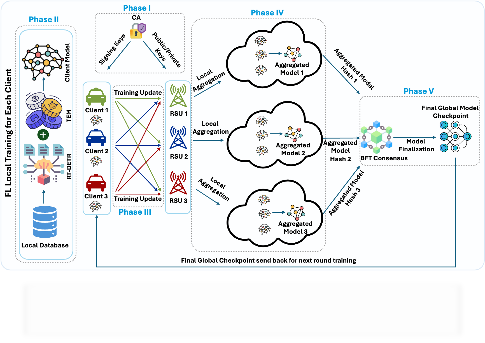

I am a Graduate Research Assistant at the University of Louisiana at Lafayette, working in the AI CyberSafe Innovations Lab under the supervision of Dr. Shuvalaxmi Dass. My research focuses on building privacy-preserving federated learning systems for healthcare and intelligent transportation, studying privacy threats and defenses for large language models in clinical deployments, and designing proactive network defense mechanisms using software-defined networking and game theory.
My published and under-review work spans systematizing the privacy landscape of federated fine-tuning for healthcare LLMs — characterizing adversary types, attack surfaces (gradient leakage, client update exposure, communication interception), and layered defenses (differential privacy, secure aggregation, split learning, randomized LoRA). I have also developed a blockchain-secured federated transformer framework for real-time object detection in intelligent transportation systems, achieving 89.20% mAP@0.5 under missing-class Non-IID conditions while reducing encoder FLOPs by 47.8%. My earlier work introduced a genetic algorithm-based approach for image steganography with cryptographic data hiding.
Before graduate school, I spent over four years as a Data Engineer at Grameenphone (Telenor Group), Bangladesh’s largest telecom operator serving 80M+ subscribers. There, I engineered distributed data pipelines on Oracle Exadata, Hadoop, and Spark for ML feature engineering over 50M+ records, built predictive analytics for customer churn, and developed real-time BI dashboards and mobile applications — infrastructure experience directly applicable to scaling federated learning systems.

Blockchain-secured federated RT-DETR framework for ITS. Token Engineering Module reduces encoder FLOPs by 47.8% and inference latency by 17.2%.
Systematization of privacy risks across the federated training pipeline: client-side defenses, secure aggregation with blockchain integrity, and communication-layer strategies.
Phase-aware SoK covering data preprocessing, federated fine-tuning, and inference. Maps attack surfaces to defenses to limitations across adversary capability gradients.
Enterprise-style SDN testbed for benchmarking MTD strategies under multi-stage attack campaigns. Supports game-theoretic, AI/ML-driven, and SDN-based path randomization.
GA-based steganographic system with cryptographic K-bit security key integration. Uses GA-driven chromosome selection for optimal embedding position.
Federated ViT framework for chest X-ray pneumonia detection enabling collaborative training under non-IID distributions with differential privacy budget analysis.